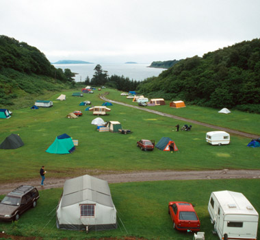

ごろ (頃)

Midnight Diner (深夜食堂) · opening
営業時間は夜12時から、朝7時ごろまで。
"My hours are from midnight until about seven in the morning." [the diner's opening hours]
ごろ means around, about, for a point in time. It goes right after the time: 7時 + ごろ = "around 7 o'clock".
On this card, midnight is a fixed time, so no ごろ. Seven is a rough end time, so it gets ごろ. It answers "When?": around seven.
Same word in polite and casual speech. In writing you'll also see it as 頃.
Examples
A coworker asks when you'll get to the office.
9時ごろ着きます。
"I'll get there around nine."
Some people add に: 9時ごろに着きます. Same meaning, with or without it.
PoliteYour friend asks when you went to bed.
2時ごろかな。
"Around two, I think."
CasualTalking about when the cherry blossoms come out.
桜は4月の初めごろです。
"The cherry blossoms are around early April."
Not only clock times: days, months and seasons work too.
PolitePlanning when to meet up.
じゃあ、6時ごろ駅で。
"Okay, at the station around six, then."
CasualWith and without
7時に起きました。
"I got up at seven." Sounds exact.
7時ごろ起きました。
"I got up around seven." A rough time.
ごろ or ぐらい?
2時間ぐらい寝ました。
"I slept for about two hours." An amount of time.
2時ごろ寝ました。
"I went to bed around two." A point in time.
Sentence mining

Source unknown No source
7日の午後7時半頃、群馬県沼田市のスーパーに熊が出ました。
"Around 7:30 pm on the 7th, a bear showed up at a supermarket in Numata, Gunma."
News style: 頃 in kanji, right after the time.
Core deck Core
朝食は大抵7時頃に食べます。
"I usually have breakfast around 7."
ごろに or just ごろ: both are fine.

Core deck Core
明日は昼頃から曇るでしょう。
"Tomorrow it'll probably cloud over from around noon."
昼ごろ + から: from around noon.
Core deck Core
梅雨は6月頃です。
"The rainy season is around June."
Works with months too, not just clock times.
Core deck Core
いつごろ夏休みを取りますか。
"Around when are you taking your summer vacation?"
いつごろ: "around when", a softer いつ.
Core deck Core
生徒たちは朝8時ごろ登校します。
"The students get to school around 8 in the morning."
No に after ごろ here, and that's fine.